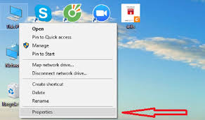

Giải phóng RAM để máy chạy nhanh
Máy vi tính thời nay cần nhiều RAM để có thể hoạt động hiệu quả hơn, đặc biệt là nếu nó đang chạy Windows Vista 32-bit.
Một hệ thống với 2GB bộ nhớ RAM vẫn có thể chạy ì ạch nếu nó được cấu hình ko tốt và bạn phải nâng cấp lên 4GB RAM để rồi phát hiện ra PC của mình chỉ có thể truy cập khoảng 3GB. Vậy dung lượng RAM đã đi đâu.Sau đây là những điều bạn cần biết.
1. Kiểm soát những chương trình lúc khởi động:
2. Vô hiệu hoá những dịch vụ không mong muốn:
Friend's Blog
- Blog Việt
- Sưu Tầm - Độc, Đẹp, Điệu
- Thủ thuật block chat internet
VinaBlog.BlogSpot.com
- Quét virus truc tuyen mien phi
- Lưu trữ đồng bộ dữ liệu trực tuyến 20214 - backup sync data online free
- Tạo ổ đĩa ảo CD / DVD
- Chuyển file Word sang PDF
- Chuyển file PDF sang Word doc
- Phần mềm nén file zip miễn phí
- Cách download file flash bằng Firefox 3
VnExpress
- Cú lừa khi mua đèn năng lượng mặt trời giá siêu rẻ
- Apple trở lại ngôi vị hãng smartphone lớn nhất thế giới
- Card đồ hoạ cũ giá cao hơn hàng mới vì Bitcoin
- Huawei ra smartphone màn hình gập Mate X2
- Sony PlayStation 5 bán chính hãng vào tháng 3
Tuoi Tre Online
- OPPO ra mắt thêm Reno5 5G tại Việt Nam với giá dễ tiếp cận hơn flagship
- Lý do dân chơi xế lựa chọn ePass
- OPPO xác nhận ra mắt smartphone 5G mới vào ngày 27-2
- Làng K'Long K'Lanh đẹp huyền ảo qua ống kính realme 7 Pro
- Ngôi làng rực rỡ hoa đào ở Lâm Đồng qua ống kính OPPO Reno5